1 | import pandas as pd |
1 | tips=sns.load_dataset("tips") |
| total_bill | tip | sex | smoker | day | time | size | |
|---|---|---|---|---|---|---|---|
| 0 | 16.99 | 1.01 | Female | No | Sun | Dinner | 2 |
| 1 | 10.34 | 1.66 | Male | No | Sun | Dinner | 3 |
| 2 | 21.01 | 3.50 | Male | No | Sun | Dinner | 3 |
| 3 | 23.68 | 3.31 | Male | No | Sun | Dinner | 2 |
| 4 | 24.59 | 3.61 | Female | No | Sun | Dinner | 4 |
1 | g=sns.FacetGrid(tips,col="time") |
<seaborn.axisgrid.FacetGrid at 0x1a1155f0f0>
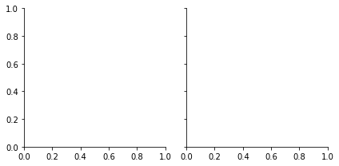
1 | g=sns.FacetGrid(tips,col="time") |
<seaborn.axisgrid.FacetGrid at 0x1a1d6a5748>
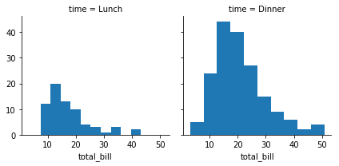
1 | g = sns.FacetGrid(tips,col="sex",hue="smoker") |
<seaborn.axisgrid.FacetGrid at 0x1a1e19c0f0>

1 | g = sns.FacetGrid(tips,col="time",row="smoker",margin_titles=True) |
<seaborn.axisgrid.FacetGrid at 0x1a1eb23d68>
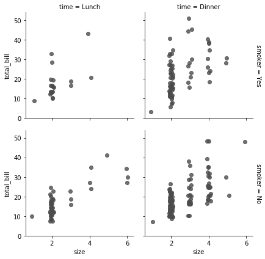
1 | g = sns.FacetGrid(tips,col="day",size=4,aspect=0.5) |
/anaconda3/lib/python3.6/site-packages/seaborn/axisgrid.py:703: UserWarning: Using the barplot function without specifying `order` is likely to produce an incorrect plot.
warnings.warn(warning)
<seaborn.axisgrid.FacetGrid at 0x1a21180d30>
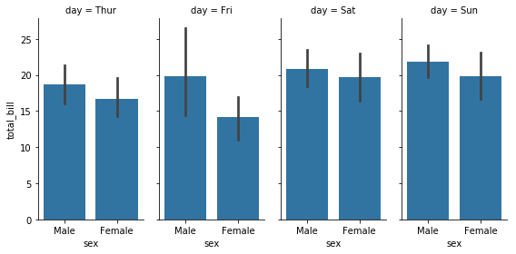
1 | from pandas import Categorical |
CategoricalIndex(['Sat', 'Sun', 'Thur', 'Fri'], categories=['Thur', 'Fri', 'Sat', 'Sun'], ordered=False, dtype='category')
/anaconda3/lib/python3.6/site-packages/seaborn/axisgrid.py:703: UserWarning: Using the boxplot function without specifying `order` is likely to produce an incorrect plot.
warnings.warn(warning)
<seaborn.axisgrid.FacetGrid at 0x1a1e4168d0>
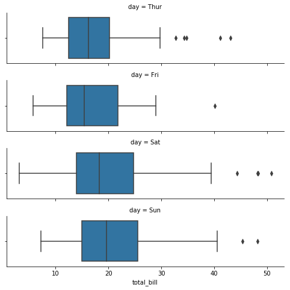
1 | pal = dict(Lunch="seagreen",Dinner="blue") |
<seaborn.axisgrid.FacetGrid at 0x1a2201f8d0>
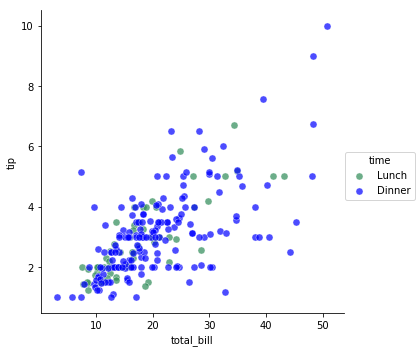
1 | with sns.axes_style("white"): |
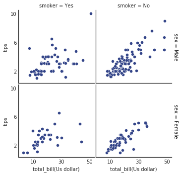
1 | iris = sns.load_dataset("iris") |
<seaborn.axisgrid.PairGrid at 0x1a21f379e8>
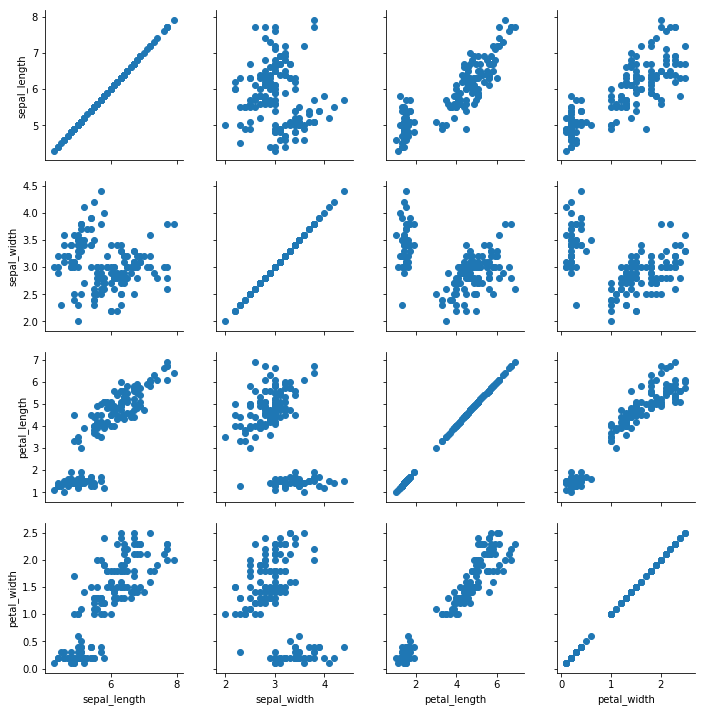
1 | g = sns.PairGrid(iris) |
<seaborn.axisgrid.PairGrid at 0x1a21a84b00>
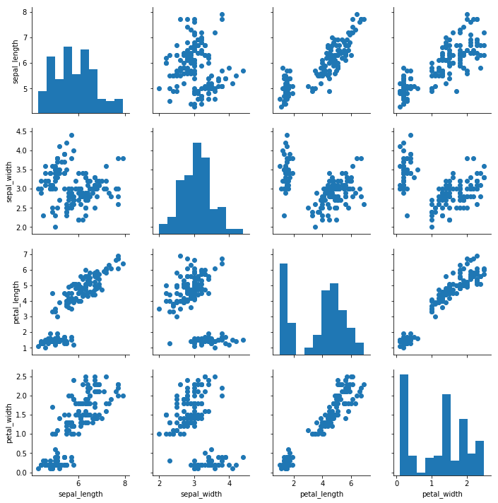
1 | g = sns.PairGrid(iris,hue="species") |
<seaborn.axisgrid.PairGrid at 0x1a23793860>
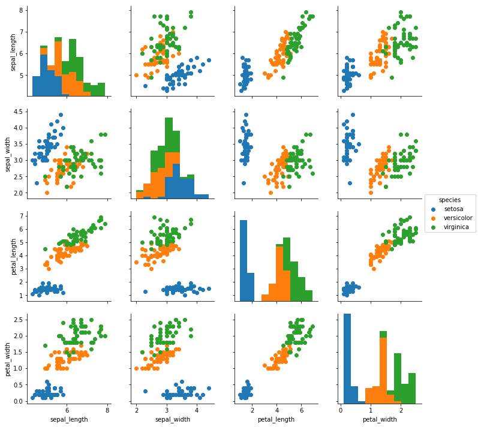
1 | g = sns.PairGrid(iris,hue="species",vars=["sepal_length","sepal_width"]) |
<seaborn.axisgrid.PairGrid at 0x1a24382550>
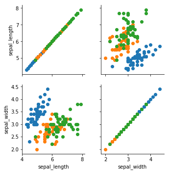
1 | g = sns.PairGrid(tips,hue="size",palette="GnBu_d") |
<seaborn.axisgrid.PairGrid at 0x1a26982c88>
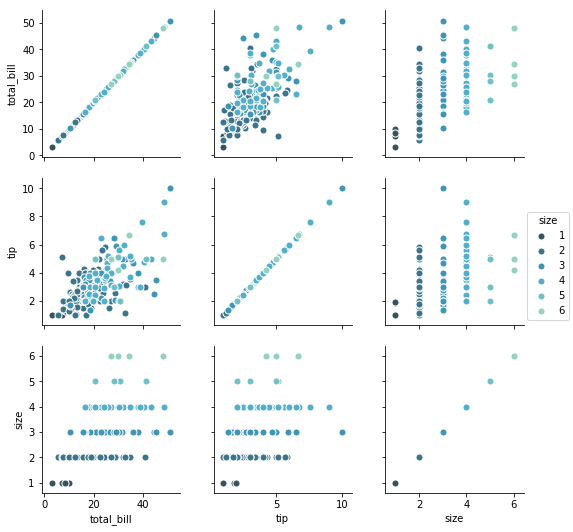